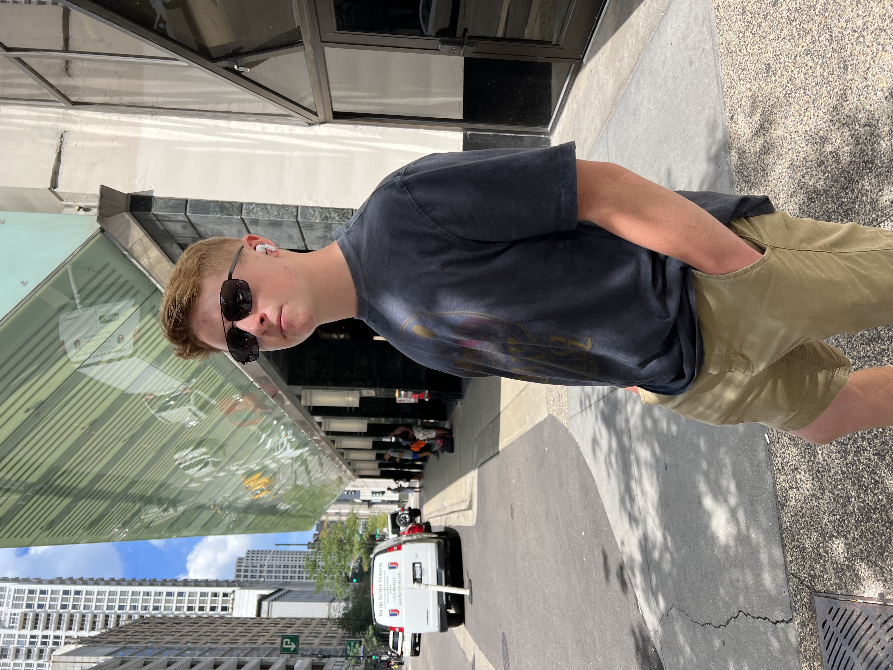

My work
A selection of my range of work
Musician and Statistician
I write, record, mix, and produce music under the artist name 'Lil Seezer.' Currenlty I have released one song on Spotify, Youtube,and Apple Music but have many more in the works.
I play tenor saxophone in the Pewamo-Westphalia concert and marching bands, at solo & ensemble, as well as in the Spartan Youth Wind Symphony, a prestegious honors group. My saxophone playing can also be heard on tracks released by Lil Seezer.
As an avid fan of statistics and supporter of the scientific method, I design and carry out experiments relating to statistics as a hobby.
Musician and statistician based out of Michigan
I am Mason Young, a multi-instrumentalist, statistics enthusiast, and student. As anyone hobbyist does, I have created several projects and won awards related to my fields of interest.
Music is perhaps the most important aspect of my life outside of and within my academic life. I have won 'Student of the Year' in band and competed in district and state solo & ensemble, since I have been a freshman. Unfortunately, I was not able to compete in state solo & ensemble my freshman and sophmore years because of COVID-19. Last year, during my junior year of high school, I received a 1 at state solo & ensemble, the highest mark, with a near perfect score of 73/75 possible points. Outside of solo & ensemble and school concert and marching band, I write, record, mix, and produce songs under the artist name 'Lil Seezer.'
Moving on to statistics, I have designed and conducted two experiments. One of these experiments was concerned with how age affects an aspect of eating, while in the other, I proved that my town's noon whistle does not actually sound at noon.
A selection of my range of work